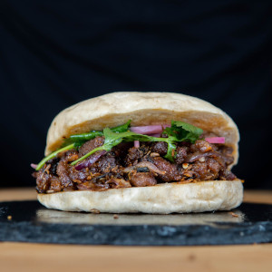

Spicy Cumin Lamb Burger

Ingredients
- 454 g (1 lb) Boneless lamb leg or lamb stew meat or ground lamb
- 8 g salt(1.5 tsp)
- 15 g (2 tbsp) cornstarch
- 30 g (2 tbsp) neutral oil for wok frying
Aromatic and spices
- 1 scallion, sliced
- Knob of ginger, grated
- 2 garlic cloves, grated
- 10 g (2 tbsp) ground cumin seeds
- 5 g (1 tbsp) Chinese dry red chile powder (substitute: Cayenne)
- 1/4 red onion, sliced
- 1 longhorn or thai chile pepper, sliced (optional)
- Pinch of MSG (optional)
Instructions
- Slice the lamb into thin pieces roughly 1/8 inch (3 mm) thick. Add the sliced lamb to a mixing bowl with the
salt, cornstarch. Mix together with your hands.
- Set a wok over high heat. Add 30 grams of the oil. Once shimmering just below the smoke point, add the
scallion,
ginger, and garlic. Stir fry for 30 seconds until fragrant, being careful not to burn. Immediately add the lamb
and stir fry until it has developed nice browning on the exterior, about 5 minutes.
- Turn the heat to low, add the cumin, chile powder, onions, longhorn pepper. Stir everything to combine, cook
for
one more minute. Taste it, add a pinch of msg if using.
- Serve on top of noodles, over rice, or in a bread roll with the pickled onions and cilantro